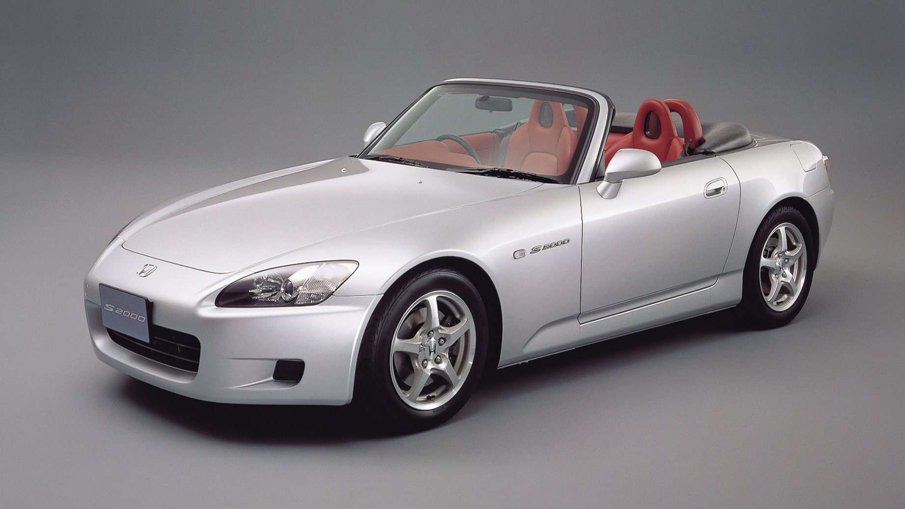

Honda S2000

O Honda S2000 é um dos roadsters mais icónicos já produzidos pela Honda, lançado em 1999 para celebrar o 50.º aniversário da marca e produzido até 2009. Foi desenvolvido com uma filosofia muito clara de criar um descapotável purista, leve, de tração traseira e com motor atmosférico de alta rotação, sendo considerado por muitos entusiastas como um dos carros mais divertidos e equilibrados da história moderna. O coração do S2000 é um dos seus maiores destaques: o motor F20C (nas versões iniciais), um 2.0 litros quatro cilindros DOHC VTEC atmosférico. Este motor ficou famoso por atingir uma das maiores potências específicas de sempre num motor atmosférico de produção, com cerca de 240 cavalos às 8.300 rpm (versão JDM) e um corte de rotação extremamente elevado, a rondar as 9.000 rpm. Em alguns mercados ligeiramente mais tarde surgiu o F22C1, um 2.2 litros com ligeiramente mais binário e um corte de rotação mais baixo (~8.000 rpm), mas com melhor resposta em baixas rotações. Em termos de desempenho, o S2000 acelera dos 0 aos 100 km/h em cerca de 6,0 a 6,5 segundos, dependendo da versão e do ano, atingindo velocidades máximas próximas dos 240 km/h. Apesar de não ser um carro focado em aceleração brutal, o seu verdadeiro ponto forte está na forma como entrega potência de forma progressiva e extremamente linear até ao limite das rotações, incentivando uma condução agressiva e precisa. O chassis do S2000 foi projetado desde o início para ser um dos mais equilibrados da sua categoria. O carro utiliza tração traseira (RWD) com motor dianteiro centralizado (front-mid engine), o que resulta numa distribuição de peso quase perfeita, próxima dos 50:50. Isto torna o comportamento em curva extremamente neutro e previsível, especialmente quando combinado com a suspensão independente nas quatro rodas, afinada para uma resposta muito direta e desportiva. A rigidez estrutural é outro ponto forte, especialmente para um roadster. Apesar de não ter tejadilho fixo, o chassis foi reforçado para manter elevada rigidez torsional, garantindo que o carro não perde precisão em condução agressiva. A direção é elétrica ou hidráulica (dependendo do ano), mas sempre extremamente comunicativa e precisa, sendo uma das mais elogiadas no mundo automóvel. A transmissão é manual de 6 velocidades, conhecida pela sua caixa curta, extremamente precisa e com um dos melhores “shift feel” de sempre. O sistema VTEC é particularmente agressivo no S2000, com uma transição muito marcada para o modo de alta performance, o que torna a experiência de condução bastante emocionante e envolvente. No design exterior, o S2000 segue uma linha simples mas muito eficiente aerodinamicamente. Tem proporções compactas, capota de lona retrátil e um visual limpo e moderno para a sua época. As versões iniciais (AP1, 1999–2003) são mais focadas em alta rotação e resposta agressiva, enquanto as versões posteriores (AP2, 2004–2009) trouxeram pequenas melhorias estéticas, suspensão revista e melhor equilíbrio geral. O interior do S2000 é simples e muito focado no condutor. O painel digital totalmente iluminado em vermelho é um dos seus elementos mais icónicos, criando uma sensação de cockpit moderno. Os bancos são desportivos, com boa retenção lateral, e a posição de condução é extremamente baixa, reforçando a sensação de carro desportivo puro. No geral, o Honda S2000 é amplamente considerado um dos melhores roadsters já feitos pela Honda, combinando motor atmosférico de alta rotação, tração traseira, equilíbrio quase perfeito e uma das melhores caixas manuais já produzidas. É um carro que não depende de turbo ou potência extrema, mas sim de engenharia precisa e de uma ligação direta entre condutor e máquina, o que o tornou um verdadeiro ícone entre entusiastas automóveis em todo o mundo.
|